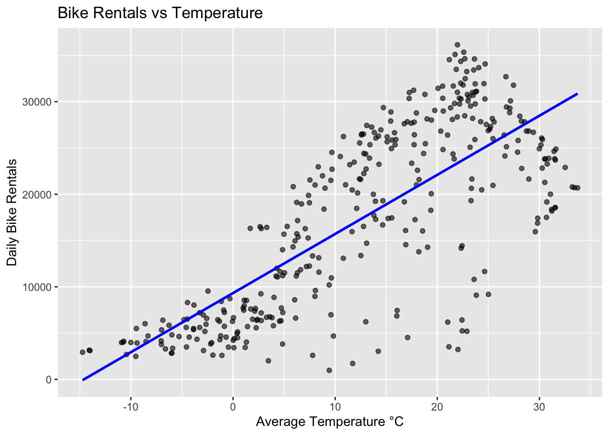
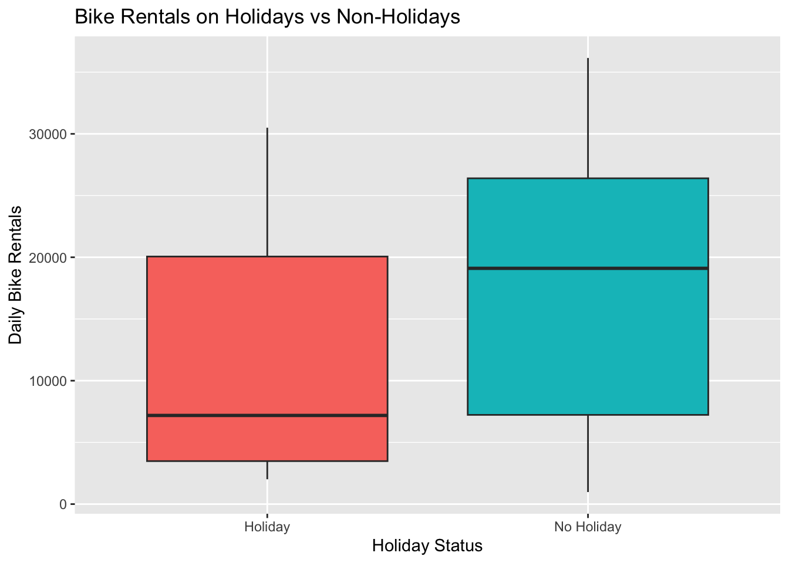

library(broom)# Read in Seoul Bike Data use read.csv; had to assign fileEncoding to get the dataset to load inbike_data <-read.csv("SeoulBikeData.csv", header =TRUE, fileEncoding ="latin1")
EDA
Checking the Data
# I'm starting by checking for missingness in the data using is.na to see the number of missing values. No missing values were found. sum(is.na(bike_data))
# Now I need to check the data structure. The numeric variables are confirmed numeric, but the categorical variables were read in as character strings, and the date is also character strings, so I need to convert both of those. I also checked the categorical variables for unique values, to confirm consistency in the dataset. str(bike_data)
Date Rented.Bike.Count Hour Temperature..C.
Length:8760 Min. : 0.0 Min. : 0.00 Min. :-17.80
Class :character 1st Qu.: 191.0 1st Qu.: 5.75 1st Qu.: 3.50
Mode :character Median : 504.5 Median :11.50 Median : 13.70
Mean : 704.6 Mean :11.50 Mean : 12.88
3rd Qu.:1065.2 3rd Qu.:17.25 3rd Qu.: 22.50
Max. :3556.0 Max. :23.00 Max. : 39.40
Humidity... Wind.speed..m.s. Visibility..10m. Dew.point.temperature..C.
Min. : 0.00 Min. :0.000 Min. : 27 Min. :-30.600
1st Qu.:42.00 1st Qu.:0.900 1st Qu.: 940 1st Qu.: -4.700
Median :57.00 Median :1.500 Median :1698 Median : 5.100
Mean :58.23 Mean :1.725 Mean :1437 Mean : 4.074
3rd Qu.:74.00 3rd Qu.:2.300 3rd Qu.:2000 3rd Qu.: 14.800
Max. :98.00 Max. :7.400 Max. :2000 Max. : 27.200
Solar.Radiation..MJ.m2. Rainfall.mm. Snowfall..cm. Seasons
Min. :0.0000 Min. : 0.0000 Min. :0.00000 Length:8760
1st Qu.:0.0000 1st Qu.: 0.0000 1st Qu.:0.00000 Class :character
Median :0.0100 Median : 0.0000 Median :0.00000 Mode :character
Mean :0.5691 Mean : 0.1487 Mean :0.07507
3rd Qu.:0.9300 3rd Qu.: 0.0000 3rd Qu.:0.00000
Max. :3.5200 Max. :35.0000 Max. :8.80000
Holiday Functioning.Day
Length:8760 Length:8760
Class :character Class :character
Mode :character Mode :character
unique(bike_data$Seasons)
[1] "Winter" "Spring" "Summer" "Autumn"
unique(bike_data$Holiday)
[1] "No Holiday" "Holiday"
unique(bike_data$Functioning.Day)
[1] "Yes" "No"
# Next, I need to convert the Date column into an actual date using lubridate.bike_data <- bike_data |>mutate(Date =dmy(Date))# Checking if it workedhead(bike_data$Date, 10)
# Now I will convert the character variables into factors.bike_data <- bike_data |>mutate(Seasons =as.factor(Seasons),Holiday =as.factor(Holiday),Functioning.Day =as.factor(Functioning.Day) )# Checking to see if it workedclass(bike_data$Seasons)
[1] "factor"
class(bike_data$Holiday)
[1] "factor"
class(bike_data$Functioning.Day)
[1] "factor"
# Simplify column names to make them easier to work with colnames(bike_data) <- (c("date", "bike_count", "hour", "temp", "humidity", "wind_speed", "visibility", "dew_point_temp", "solar_radiation", "rainfall", "snowfall", "seasons", "holiday", "functioning_day"))# Checking new nameshead(bike_data)
date bike_count hour temp
Min. :2017-12-01 Min. : 0.0 Min. : 0.00 Min. :-17.80
1st Qu.:2018-03-02 1st Qu.: 191.0 1st Qu.: 5.75 1st Qu.: 3.50
Median :2018-06-01 Median : 504.5 Median :11.50 Median : 13.70
Mean :2018-06-01 Mean : 704.6 Mean :11.50 Mean : 12.88
3rd Qu.:2018-08-31 3rd Qu.:1065.2 3rd Qu.:17.25 3rd Qu.: 22.50
Max. :2018-11-30 Max. :3556.0 Max. :23.00 Max. : 39.40
humidity wind_speed visibility dew_point_temp
Min. : 0.00 Min. :0.000 Min. : 27 Min. :-30.600
1st Qu.:42.00 1st Qu.:0.900 1st Qu.: 940 1st Qu.: -4.700
Median :57.00 Median :1.500 Median :1698 Median : 5.100
Mean :58.23 Mean :1.725 Mean :1437 Mean : 4.074
3rd Qu.:74.00 3rd Qu.:2.300 3rd Qu.:2000 3rd Qu.: 14.800
Max. :98.00 Max. :7.400 Max. :2000 Max. : 27.200
solar_radiation rainfall snowfall seasons
Min. :0.0000 Min. : 0.0000 Min. :0.00000 Autumn:2184
1st Qu.:0.0000 1st Qu.: 0.0000 1st Qu.:0.00000 Spring:2208
Median :0.0100 Median : 0.0000 Median :0.00000 Summer:2208
Mean :0.5691 Mean : 0.1487 Mean :0.07507 Winter:2160
3rd Qu.:0.9300 3rd Qu.: 0.0000 3rd Qu.:0.00000
Max. :3.5200 Max. :35.0000 Max. :8.80000
holiday functioning_day
Holiday : 432 No : 295
No Holiday:8328 Yes:8465
# Next, I will run some summary statistics on the bike data. I want to see the mean, median, standard deviation, and IQR for each variable. This code shows the summary statistics for all of the numeric variables. bike_data |>summarise(across(where(is.numeric), list("mean"= mean, "median"= median, "sd"= sd, "iqr"= IQR), .names ="{.fn}_{.col}"))
# I also want to see summary statistics for the categorical variables, so I will run each of these separately for seasons, holiday, and functioning day. bike_data |>group_by(seasons) |>summarise(across(where(is.numeric), list("mean"= mean, "median"= median, "sd"= sd, "iqr"= IQR), .names ="{.fn}_{.col}"))
#After running the functioning day code, I noticed that the rental count was zero on non-functional days, so I decided to remove these observations from the dataset before further analysis.bike_data <- bike_data |>filter(functioning_day =="Fun"| functioning_day =="Yes")
# Now I will summarize across the hours so each day has only one observation, to simplify the analysis. bike_summary <- bike_data |>group_by(date, seasons, holiday) |>summarise(# Find sum of bike count, rainfall, and snowfallbike_count =sum(bike_count),rainfall =sum(rainfall),snowfall =sum(snowfall),# Find mean of all weather related variablestemp =mean(temp),humidity =mean(humidity),wind_speed =mean(wind_speed),visibility =mean(visibility),dew_point_temp =mean(dew_point_temp),solar_radiation =mean(solar_radiation),.groups ="drop" )# Check if that workedbike_summary
# Starting with this updated dataset, I will first do some summary stats. I found that the bike count variable ranged widely between days, and the weather variables showed reasonable daily averages and variability.bike_summary |>summarise(across(where(is.numeric), list("mean"= mean, "median"= median, "sd"= sd, "iqr"= IQR), .names ="{.fn}_{.col}"))
# Next, I calculated correlations between all numeric variables to identify which weather factors were most associated with bike rentals. bike_summary |>select(where(is.numeric)) |>cor(use ="complete.obs") |>round(2)
# The correlation matrix showed a few relationships. Bike rentals were strongly positively correlated with temperature, while humidity and rainfall showed negative correlations with rental counts. Other variables had weaker correlations, implying they have less influence on bike rentals. # To visualize these patterns, I created scatterplots and boxplots to see both numeric and categorical relationships. # Scatterplot - rentals vs temperatureggplot(bike_summary, aes(x = temp, y = bike_count)) +geom_point(alpha =0.6) +geom_smooth(method ="lm", se =FALSE, color ="blue") +labs(title ="Bike Rentals vs Temperature",x ="Average Temperature °C",y ="Daily Bike Rentals")
`geom_smooth()` using formula = 'y ~ x'

# Scatterplot - rentals vs humidityggplot(bike_summary, aes(x = humidity, y = bike_count)) +geom_point(alpha =0.6) +geom_smooth(method ="lm", se =FALSE, color ="blue") +labs(title ="Bike Rentals vs Humidity",x ="Average Humidity (%)",y ="Daily Bike Rentals")
`geom_smooth()` using formula = 'y ~ x'
# Boxplot - rentals vs seasonsggplot(bike_summary, aes(x = seasons, y = bike_count, fill = seasons)) +geom_boxplot() +labs(title ="Bike Rentals by Season",x ="Season",y ="Daily Bike Rentals") +theme(legend.position ="none")
# Boxplot - rentals vs holidaysggplot(bike_summary, aes(x = holiday, y = bike_count, fill = holiday)) +geom_boxplot() +labs(title ="Bike Rentals on Holidays vs Non-Holidays",x ="Holiday Status",y ="Daily Bike Rentals") +theme(legend.position ="none")

# These plots all supported the correlations observed earlier.
Split the Data
75/25 Split
# Now, I want to split the cleaned and summarized dataset into training and testing subsets. I will set a seed value to ensure my results will be reproducible.set.seed(123)# 75/25 split, stratify by seasonsbike_split <-initial_split(bike_summary, prop =0.75, strata = seasons)# Create the two datasetsbike_train <-training(bike_split)bike_test <-testing(bike_split)# Check sizesnrow(bike_train)
[1] 263
nrow(bike_test)
[1] 90
# Check distribution of seasonsprop.table(table(bike_train$seasons))
Autumn Spring Summer Winter
0.2281369 0.2547529 0.2623574 0.2547529
prop.table(table(bike_test$seasons))
Autumn Spring Summer Winter
0.2333333 0.2555556 0.2555556 0.2555556
Fitting MLR Models
# Now I need to do a 10 fold split. Beforehand, I'm going to use my date column to create a weekday/weekend variable for later usebike_train <- bike_train |>mutate(day_of_week =wday(date, label =TRUE, abbr =FALSE), # e.g. Monday, Tuesday, ...day_type =if_else(day_of_week %in%c("Saturday", "Sunday"), "Weekend", "Weekday"),day_type =as.factor(day_type) )bike_test <- bike_test |>mutate(day_of_week =wday(date, label =TRUE, abbr =FALSE),day_type =if_else(day_of_week %in%c("Saturday", "Sunday"), "Weekend", "Weekday"),day_type =as.factor(day_type) )# Test to see if it workedglimpse(bike_test)
# I'll start with recipe 1. rec1 <-recipe(bike_count ~ ., data = bike_train) |># Remove dateupdate_role(date, new_role ="ID") |># Create dummy variablesstep_dummy(all_nominal_predictors()) |># Standardize numeric variablesstep_normalize(all_numeric_predictors())# I wanted to check if the recipe worked here, so I checked and then commented it out. #rec1_prep <- prep(rec1)#baked_data <- bake(rec1_prep, new_data = NULL)#glimpse(baked_data)#summary(rec1_prep)
Recipe 2
# Next up is recipe 2. I did the same steps as before, but this time I added in interactions between seasons and holiday, seasons and temp, and temp and rainfall. I used starts with() for my seasons and holiday variables.rec2 <-recipe(bike_count ~ ., data = bike_train) |>update_role(date, new_role ="ID") |>step_dummy(all_nominal_predictors()) |>step_normalize(all_numeric_predictors()) |># Interactionsstep_interact(terms =~starts_with("seasons_"):starts_with("holiday_") +starts_with("seasons_"):temp + temp:rainfall)
Recipe 3
# For recipe 3, I did the same steps as in rec1 and rec2, but this time I added in quadratic terms for each numeric predictor with degree = 2, which allows my model to capture non-linear relationships between weather variables and bike rentals. To do this, I tried to use all_numeric_predictors(), but found that it wouldn't work because I was trying to apply step_poly() to variables that weren't continous numeric variables. I updated this to specify each variable I want to add in quadratic terms for.rec3 <-recipe(bike_count ~ ., data = bike_train) |>update_role(date, new_role ="ID") |>step_dummy(all_nominal_predictors()) |>step_normalize(all_numeric_predictors()) |>step_interact(terms =~starts_with("seasons_"):starts_with("holiday_") +starts_with("seasons_"):temp + temp:rainfall) |>step_poly(temp, humidity, wind_speed, visibility, dew_point_temp, solar_radiation, rainfall, degree =2)# Check that it works#rec3_prep <- prep(rec3)#baked_rec3 <- bake(rec3_prep, new_data = NULL)#glimpse(baked_rec3)
Fit the Models
# Now I need to fit the multiple linear regression models using 10 fold cross validation on the training set. set.seed(123)bike_folds <-vfold_cv(bike_train, v =10, strata = seasons)# Define model specificationlm_spec <-linear_reg() |>set_engine("lm")# Model 1set.seed(123)lm_fit1 <-workflow() |>add_model(lm_spec) |>add_recipe(rec1) |>fit_resamples(resamples = bike_folds,metrics =metric_set(rmse, rsq),control =control_resamples(save_pred =TRUE))
→ A | warning: prediction from rank-deficient fit; consider predict(., rankdeficient="NA")
# A tibble: 6 × 7
.metric .estimator mean n std_err .config model
<chr> <chr> <dbl> <int> <dbl> <chr> <chr>
1 rmse standard 4193. 10 214. Preprocessor1_Model1 Basic
2 rsq standard 0.827 10 0.0150 Preprocessor1_Model1 Basic
3 rmse standard 3144. 10 174. Preprocessor1_Model1 Interactions
4 rsq standard 0.900 10 0.0149 Preprocessor1_Model1 Interactions
5 rmse standard 3030. 10 165. Preprocessor1_Model1 Interactions …
6 rsq standard 0.908 10 0.0132 Preprocessor1_Model1 Interactions …
# After comparing the results of the multiple linear regression models, I found that model 1 (using basic predictors) produced an RMSE of 4193 and RSQ of .83, model 2 (adding interaction terms) produced RMSE of 3144 and RSQ of .90, and model 3 (adding quadratic terms) produced RMSE of 3030 and RSQ of .91 indicating the best predictive performance. I selected model 3 as the final model to fit and evaluate.
# Fit the best model to the full training setfinal_wf <-workflow() |>add_model(lm_spec) |>add_recipe(rec3)final_fit <- final_wf |>fit(data = bike_train)# Predict on test datafinal_predictions <-predict(final_fit, new_data = bike_test) |>bind_cols(bike_test |>select(bike_count))
Warning in predict.lm(object = object$fit, newdata = new_data, type =
"response", : prediction from rank-deficient fit; consider predict(.,
rankdeficient="NA")
# Compute RMSE metric on test setmetrics(final_predictions, truth = bike_count, estimate = .pred)
# A tibble: 3 × 3
.metric .estimator .estimate
<chr> <chr> <dbl>
1 rmse standard 2957.
2 rsq standard 0.915
3 mae standard 2191.
# Extract fitted model final_fit_extract <-extract_fit_parsnip(final_fit)tidy(final_fit_extract)
# I extracted the fitted linear model from the workflow using extract_fit_parsnip() and displayed the coefficients using tidy(). The resulting table shows the estimated effects of each predictor on bike rentals. Overall, the model captures realistic relationships between environmental conditions and cycling demand, providing a strong predictive framework for future rental forecasting.